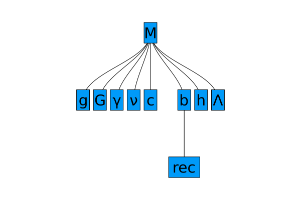
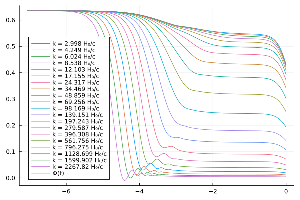
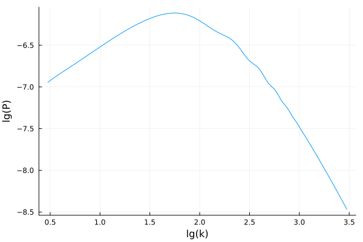

Getting started
Install SymBoltz.jl and load it with
using ModelingToolkit
import SymBoltz1. Define the model
The first step is to define our cosmological model. This is a symbolic representation of the variables and equations that describe the various components in the universe, such as the theory of gravity (like general relativity) and particle species (like the cosmological constant, cold dark matter, photons and baryons). It will be used both to create the numerical problem to solve, and to access variables in its solution.
To get started, we will simply load the standard ΛCDM model:
@named M = SymBoltz.ΛCDM()The symbolic model has a hierarchical structure, with multiple subsystems representing different components of the Einstein-Boltzmann system:
using Plots
plot(M)
In this case, the components are:
| Symbol | Component |
|---|---|
g | spacetime metric ($g_{\mu\nu}$) |
G | gravity |
γ | photons |
ν | massless neutrinos |
c | cold dark matter |
b | baryons |
h | massive neutrinos |
Λ | cosmological constant |
rec | recombination |
The hierarchical structure of the whole symbolic model can be inspected interactively as a ModelingToolkit system by evaluating M, M.<TAB>, M.G and so on (with TAB-completion). For example, to see all equations for the theory of gravity:
equations(M.G)\[ \begin{align} \frac{\mathrm{d} a\left( t \right)}{\mathrm{d}t} &= \left( a\left( t \right) \right)^{2} \sqrt{8.3776 \rho\left( t \right)} \\ {\rho}crit\left( t \right) &= 0.11937 \left( E\left( t \right) \right)^{2} \\ \frac{\mathrm{d} \Phi\left( t \right)}{\mathrm{d}t} \epsilon &= \left( \frac{ - k^{2} \Phi\left( t \right)}{3 \mathscr{E}\left( t \right)} + \frac{ - 4.1888 \left( a\left( t \right) \right)^{2} \delta\rho\left( t \right)}{\mathscr{E}\left( t \right)} - \mathscr{E}\left( t \right) \Psi\left( t \right) \right) \epsilon \\ k^{2} \left( - \Psi\left( t \right) + \Phi\left( t \right) \right) \epsilon &= 37.699 \left( a\left( t \right) \right)^{2} \Pi\left( t \right) \epsilon \end{align} \]
See TODO to learn more about the model representation and how to define extended cosmological models.
2. Build the problem
The next step is to create a cosmological problem from the symbolic model. This separates the full model into sequential computational stages, like the background and perturbation systems.
prob = SymBoltz.CosmologyProblem(M)3. Solve the problem
Finally, we set our desired cosmological parameters and wavenumbers, and solve the problem:
pars = [
M.γ.Ω0 => 5e-5
M.c.Ω0 => 0.27
M.b.Ω0 => 0.05
M.ν.Neff => 3.0
M.g.h => 0.7
M.b.rec.Yp => 0.25
]
ks = 10 .^ range(-3, 0, length=100) / SymBoltz.k0 # TODO: improve on units
sol = SymBoltz.solve(prob, pars, ks)Cosmology solution with
* background: solved with Rodas5P, 13456 points
* perturbation (k = 2.9979245800000003 H₀/c): solved with KenCarp47, 44 points
* perturbation (k = 3.2145762611930646 H₀/c): solved with KenCarp47, 45 points
* perturbation (k = 3.4468847575298187 H₀/c): solved with KenCarp47, 44 points
* perturbation (k = 3.6959815435462247 H₀/c): solved with KenCarp47, 44 points
* perturbation (k = 3.9630798622997365 H₀/c): solved with KenCarp47, 47 points
* perturbation (k = 4.249480634553193 H₀/c): solved with KenCarp47, 48 points
* perturbation (k = 4.556578794999018 H₀/c): solved with KenCarp47, 49 points
* perturbation (k = 4.885870086384743 H₀/c): solved with KenCarp47, 51 points
* perturbation (k = 5.238958344631105 H₀/c): solved with KenCarp47, 50 points
* perturbation (k = 5.617563310425402 H₀/c): solved with KenCarp47, 53 points
* perturbation (k = 6.02352900533696 H₀/c): solved with KenCarp47, 54 points
* perturbation (k = 6.458832713251267 H₀/c): solved with KenCarp47, 50 points
* perturbation (k = 6.925594610867335 H₀/c): solved with KenCarp47, 55 points
* perturbation (k = 7.426088094164381 H₀/c): solved with KenCarp47, 54 points
* perturbation (k = 7.962750851133577 H₀/c): solved with KenCarp47, 53 points
* perturbation (k = 8.538196734705338 H₀/c): solved with KenCarp47, 57 points
* perturbation (k = 9.155228493700102 H₀/c): solved with KenCarp47, 60 points
* perturbation (k = 9.816851423809567 H₀/c): solved with KenCarp47, 59 points
* perturbation (k = 10.526288005096367 H₀/c): solved with KenCarp47, 62 points
* perturbation (k = 11.286993597305269 H₀/c): solved with KenCarp47, 61 points
* perturbation (k = 12.102673269430824 H₀/c): solved with KenCarp47, 67 points
* perturbation (k = 12.977299845511187 H₀/c): solved with KenCarp47, 66 points
* perturbation (k = 13.915133254541274 H₀/c): solved with KenCarp47, 63 points
* perturbation (k = 14.92074127875044 H₀/c): solved with KenCarp47, 67 points
* perturbation (k = 15.999021801300492 H₀/c): solved with KenCarp47, 68 points
* perturbation (k = 17.15522666176309 H₀/c): solved with KenCarp47, 70 points
* perturbation (k = 18.39498723556614 H₀/c): solved with KenCarp47, 74 points
* perturbation (k = 19.724341861995857 H₀/c): solved with KenCarp47, 74 points
* perturbation (k = 21.149765254344224 H₀/c): solved with KenCarp47, 76 points
* perturbation (k = 22.67820003544614 H₀/c): solved with KenCarp47, 79 points
* perturbation (k = 24.31709055220224 H₀/c): solved with KenCarp47, 83 points
* perturbation (k = 26.074419133783373 H₀/c): solved with KenCarp47, 86 points
* perturbation (k = 27.958744970114715 H₀/c): solved with KenCarp47, 87 points
* perturbation (k = 29.979245800000005 H₀/c): solved with KenCarp47, 88 points
* perturbation (k = 32.14576261193065 H₀/c): solved with KenCarp47, 89 points
* perturbation (k = 34.468847575298184 H₀/c): solved with KenCarp47, 91 points
* perturbation (k = 36.95981543546225 H₀/c): solved with KenCarp47, 99 points
* perturbation (k = 39.63079862299737 H₀/c): solved with KenCarp47, 99 points
* perturbation (k = 42.49480634553195 H₀/c): solved with KenCarp47, 102 points
* perturbation (k = 45.565787949990195 H₀/c): solved with KenCarp47, 108 points
* perturbation (k = 48.858700863847446 H₀/c): solved with KenCarp47, 109 points
* perturbation (k = 52.38958344631108 H₀/c): solved with KenCarp47, 110 points
* perturbation (k = 56.17563310425399 H₀/c): solved with KenCarp47, 113 points
* perturbation (k = 60.235290053369575 H₀/c): solved with KenCarp47, 112 points
* perturbation (k = 64.58832713251263 H₀/c): solved with KenCarp47, 120 points
* perturbation (k = 69.25594610867331 H₀/c): solved with KenCarp47, 125 points
* perturbation (k = 74.26088094164382 H₀/c): solved with KenCarp47, 128 points
* perturbation (k = 79.62750851133576 H₀/c): solved with KenCarp47, 131 points
* perturbation (k = 85.38196734705336 H₀/c): solved with KenCarp47, 131 points
* perturbation (k = 91.55228493700103 H₀/c): solved with KenCarp47, 135 points
* perturbation (k = 98.16851423809565 H₀/c): solved with KenCarp47, 140 points
* perturbation (k = 105.26288005096367 H₀/c): solved with KenCarp47, 143 points
* perturbation (k = 112.86993597305269 H₀/c): solved with KenCarp47, 147 points
* perturbation (k = 121.02673269430824 H₀/c): solved with KenCarp47, 149 points
* perturbation (k = 129.77299845511192 H₀/c): solved with KenCarp47, 157 points
* perturbation (k = 139.15133254541283 H₀/c): solved with KenCarp47, 157 points
* perturbation (k = 149.2074127875045 H₀/c): solved with KenCarp47, 161 points
* perturbation (k = 159.990218013005 H₀/c): solved with KenCarp47, 159 points
* perturbation (k = 171.55226661763083 H₀/c): solved with KenCarp47, 164 points
* perturbation (k = 183.9498723556613 H₀/c): solved with KenCarp47, 170 points
* perturbation (k = 197.2434186199585 H₀/c): solved with KenCarp47, 179 points
* perturbation (k = 211.49765254344211 H₀/c): solved with KenCarp47, 185 points
* perturbation (k = 226.7820003544614 H₀/c): solved with KenCarp47, 188 points
* perturbation (k = 243.17090552202242 H₀/c): solved with KenCarp47, 193 points
* perturbation (k = 260.74419133783374 H₀/c): solved with KenCarp47, 194 points
* perturbation (k = 279.58744970114714 H₀/c): solved with KenCarp47, 195 points
* perturbation (k = 299.792458 H₀/c): solved with KenCarp47, 197 points
* perturbation (k = 321.4576261193065 H₀/c): solved with KenCarp47, 197 points
* perturbation (k = 344.68847575298184 H₀/c): solved with KenCarp47, 202 points
* perturbation (k = 369.5981543546226 H₀/c): solved with KenCarp47, 205 points
* perturbation (k = 396.3079862299738 H₀/c): solved with KenCarp47, 208 points
* perturbation (k = 424.94806345531936 H₀/c): solved with KenCarp47, 208 points
* perturbation (k = 455.65787949990187 H₀/c): solved with KenCarp47, 210 points
* perturbation (k = 488.58700863847446 H₀/c): solved with KenCarp47, 211 points
* perturbation (k = 523.8958344631108 H₀/c): solved with KenCarp47, 205 points
* perturbation (k = 561.75633104254 H₀/c): solved with KenCarp47, 210 points
* perturbation (k = 602.3529005336957 H₀/c): solved with KenCarp47, 204 points
* perturbation (k = 645.8832713251265 H₀/c): solved with KenCarp47, 203 points
* perturbation (k = 692.5594610867332 H₀/c): solved with KenCarp47, 200 points
* perturbation (k = 742.608809416438 H₀/c): solved with KenCarp47, 197 points
* perturbation (k = 796.2750851133575 H₀/c): solved with KenCarp47, 196 points
* perturbation (k = 853.8196734705338 H₀/c): solved with KenCarp47, 191 points
* perturbation (k = 915.5228493700104 H₀/c): solved with KenCarp47, 195 points
* perturbation (k = 981.6851423809566 H₀/c): solved with KenCarp47, 187 points
* perturbation (k = 1052.6288005096371 H₀/c): solved with KenCarp47, 188 points
* perturbation (k = 1128.699359730527 H₀/c): solved with KenCarp47, 184 points
* perturbation (k = 1210.2673269430827 H₀/c): solved with KenCarp47, 185 points
* perturbation (k = 1297.729984551119 H₀/c): solved with KenCarp47, 188 points
* perturbation (k = 1391.513325454128 H₀/c): solved with KenCarp47, 181 points
* perturbation (k = 1492.0741278750447 H₀/c): solved with KenCarp47, 180 points
* perturbation (k = 1599.90218013005 H₀/c): solved with KenCarp47, 180 points
* perturbation (k = 1715.5226661763083 H₀/c): solved with KenCarp47, 175 points
* perturbation (k = 1839.498723556613 H₀/c): solved with KenCarp47, 177 points
* perturbation (k = 1972.4341861995852 H₀/c): solved with KenCarp47, 182 points
* perturbation (k = 2114.9765254344215 H₀/c): solved with KenCarp47, 178 points
* perturbation (k = 2267.820003544613 H₀/c): solved with KenCarp47, 175 points
* perturbation (k = 2431.7090552202235 H₀/c): solved with KenCarp47, 175 points
* perturbation (k = 2607.441913378337 H₀/c): solved with KenCarp47, 180 points
* perturbation (k = 2795.8744970114712 H₀/c): solved with KenCarp47, 182 points
* perturbation (k = 2997.92458 H₀/c): solved with KenCarp47, 179 pointsTo solve only the background, you can simply omit the ks argument: SymBoltz.solve(prob, pars, ks).
4. Access the solution
You are now free to do whatever you want with the solution object. It can be called like
sol(t, var)to access the background variable(s)varas a function of the conformal time(s)t, orsol(k, t, var)to access the perturbed variable(s)varas a function of the wavenumber(s)kand conformal time(s)t.
This will interpolate linearly in $\log(k)$, and with the ODE solver's interpolator in $t$.
For example, to get the reduced Hubble function $E(t) = H(t) / H_0$ for 1000 log-spaced conformal times:
ts = exp.(range(log.(extrema(sol[SymBoltz.t]))..., length=1000)) # TODO: replace with M.t
Es = sol(ts, M.g.E)1000-element Vector{Float64}:
1.1729573395886345e12
1.1435872021449717e12
1.1149525082523171e12
1.0870348407817395e12
1.0598162438558347e12
1.0332792112954833e12
1.0074066753554668e12
9.821819957426614e11
9.575889489090781e11
9.336117176132574e11
⋮
1.1993444967624733
1.1691782997584728
1.1405955841628594
1.1135521769833179
1.0880066651040647
1.0639181205647714
1.0412461630020156
1.0199525689486146
1.0Similarly, to get $\Phi(k,t)$ for the 100 wavenumbers we solved for and the same 1000 log-spaced conformal times:
Φs = sol(ks, ts, M.g.Φ)100×1000 Matrix{Float64}:
0.635265 0.635265 0.635264 … 0.447036 0.439707 0.431866
0.635265 0.635265 0.635264 0.446576 0.439257 0.431426
0.635265 0.635265 0.635264 0.446091 0.43878 0.430956
0.635265 0.635265 0.635264 0.445545 0.438241 0.430427
0.635265 0.635265 0.635264 0.444918 0.437625 0.429825
0.635265 0.635265 0.635264 … 0.444263 0.43698 0.429188
0.635265 0.635265 0.635264 0.443503 0.436235 0.428462
0.635265 0.635265 0.635264 0.442707 0.43545 0.427686
0.635265 0.635265 0.635264 0.441787 0.43455 0.426808
0.635265 0.635265 0.635264 0.440813 0.433586 0.425857
⋮ ⋱
0.635265 0.635264 0.635263 0.00642039 0.00631441 0.00620276
0.635265 0.635264 0.635262 0.00576312 0.00566986 0.00556845
0.635265 0.635264 0.635262 0.00517244 0.00508798 0.00499679
0.635265 0.635263 0.635262 0.00463769 0.00456235 0.00448054
0.635265 0.635263 0.635261 … 0.00415579 0.00408716 0.00401486
0.635265 0.635263 0.635261 0.0037221 0.00366055 0.00359532
0.635265 0.635263 0.635261 0.00333014 0.00327538 0.00321764
0.635265 0.635262 0.63526 0.00297873 0.00293051 0.00287795
0.635265 0.635262 0.635259 0.00266313 0.0026191 0.00257263This can be plotted with using Plots; plot(log10.(ts), transpose(Φs)), but this is even easier with the included plot recipe:
using Plots
plot(sol, ks[begin:5:end], log10(M.g.a), M.g.Φ) # lg(a) vs. Φ for every 5th wavenumber
We can also calculate the power spectrum for a desired species (here: cold dark matter with M.c):
Ps = SymBoltz.P(sol, M.c, ks)
plot(log10.(ks), log10.(Ps); xlabel="lg(k)", ylabel="lg(P)", label=nothing)